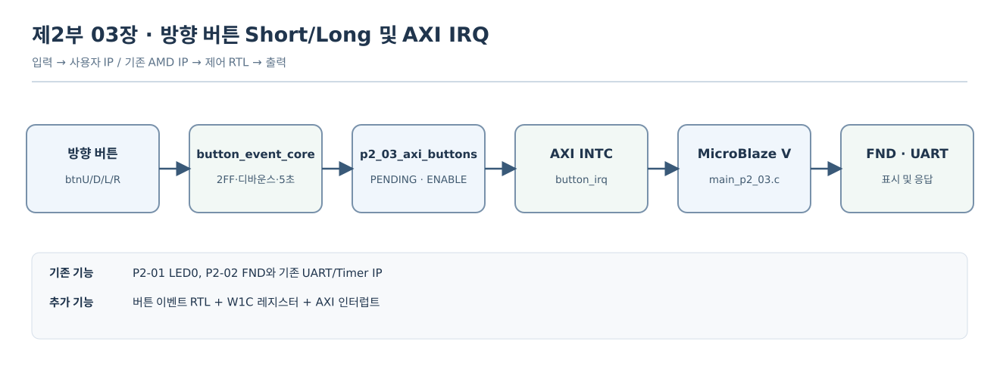

제2부 03장 · 방향 버튼 Short/Long 및 AXI IRQ
1. 과제 개요
Basys3의 방향 버튼 4개를 동기화·디바운스하고 짧게/길게 누른 이벤트를 AXI 레지스터에 저장한 뒤 인터럽트로 CPU에 전달합니다.
2. 입력·출력 정의
| 구분 | 입력·출력 | 역할 |
|---|---|---|
| 입력 | btnU, btnD, btnL, btnR | Basys3 방향 버튼 4개 |
| 입력 | RsRx, clk, btnC | UART 명령·시스템 클록·리셋 |
| AXI 출력 | BTN_PENDING / BTN_ENABLE / IRQ | 이벤트 상태·마스크·인터럽트 |
| 보드 출력 | seg, an, dp, led | FND 이벤트 표시·기존 LED 연결 유지 |
3. 전체 동작 구조

4. 기존 기능과 추가 기능
| 구분 | 입력·출력 | 역할 |
|---|---|---|
| 기존 기능 | P2-01 LED0, P2-02 FND와 기존 UART/Timer IP | |
| 추가 기능 | 버튼 이벤트 RTL + W1C 레지스터 + AXI 인터럽트 | |
핵심 설계·레지스터
동기화·디바운스·5초 구분
| 과정 | 기능 | 해석·확인 |
|---|---|---|
| ① 2FF 동기화 | meta, synced | 비동기 버튼을 AXI 클록 도메인으로 전달. 메타안정성 위험 감소(완전 제거 아님) |
| ② 디바운스 | db_ticks | 연속적으로 다른 수준이 20ms 유지되어야 debounced 갱신 |
| ③ 길게 누르기 | hold_ticks, long_sent | 안정적으로 눌림이 확정된 후 5초에 LONG 1회 |
| ④ 짧게 누르기 | event_pulse[k] | LONG이 없었던 누름을 놓고, 해제가 디바운스된 시점에 SHORT 1회 |
| ⑤ 독립 동시 입력 | g_button[0..3] | 4개 버튼 각각 타이머 별도, 동시 눌림 허용 |
S00_AXI_ACLK이 100MHz가 아니면 분주값을 수정해야 합니다. LONG_CYCLES는 디바운스 후 시간이며, 외부 손가락 누름의 정확한 시간과는 디바운스 지연만큼 다릅니다.100 MHz × 0.020 s → DEBOUNCE_CYCLES 2,000,000
100 MHz × 5.000 s → LONG_CYCLES 500,000,000
테스트벤치 전용: DEBOUNCE_CYCLES 3 / LONG_CYCLES 12AXI4-Lite 레지스터·IRQ
| Offset | 이름 | 접근·비트 | Reset | 실제 동작 |
|---|---|---|---|---|
0x00 | BTN_PENDING | [7:0] R / W1C | 0 | 이벤트 발생 시 1, 그 비트에 1을 쓰면 해제 |
0x04 | BTN_ENABLE | [7:0] RW | 0 | 인터럽트 허용 마스크. irq = |(pending & enable) |
0x08 | BTN_PRESSED | [3:0] RO | 0 | 현재 디바운스된 버튼 상태 |
0x0C | BTN_ID | RO, 0x00030001 | 고정 | 잘못된 주소/IP 접근 여부 확인 |
0x10 | BTN_COALESCED | [7:0] R / W1C | 0 | 같은 종류 이벤트가 PENDING=1 동안 다시 왔음을 기록 |
| 이벤트 비트 | 0 | 1 | 2 | 3 | 4 | 5 | 6 | 7 |
|---|---|---|---|---|---|---|---|---|
| 종류 | U 짧게 | D 짧게 | L 짧게 | R 짧게 | U 길게 | D 길게 | L 길게 | R 길게 |
Xil_Out32(BTN_BASE + 0x00, 0x01)은 U 짧게 이벤트만 해제하며, 나머지 비트는 보존합니다. 지우기와 신규 이벤트가 같은 클록에 발생하면 신규 이벤트의 SET이 우선합니다.PENDING은 이벤트별 1비트이므로 동일 종류의 두 입력을 큐처럼 보관하지 못합니다. 그런 상황에서는 COALESCED를 1로 남기지만 정확한 발생 횟수는 복구할 수 없습니다. 제3장에서는 이 한계를 실습으로 확인하고, 이벤트 FIFO/카운터는 후속 고도화 과제로 분리합니다.방향 버튼 핀과 FND 보존
| 포트 | Basys3 핀 | 기능 |
|---|---|---|
btnU | T18 | UP |
btnD | U17 | DOWN |
btnL | W19 | LEFT |
btnR | T17 | RIGHT |
btnC | U18 | 기존 Reset, 변경 금지 |
핀은 Digilent Basys3 Master XDC 기준입니다. LVCMOS33 입출력 표준을 사용하고, 기존 FND 세그먼트 및 LED0 핀 제약을 중복 추가하지 않습니다.
btnC는 기존 Reset으로 유지합니다. 방향 버튼 4개만 새 IP의 입력으로 사용합니다.
5. Vivado·Vitis 따라하기
- 01. 02장 기준 프로젝트를 독립 복제
Vivado → File → Open Project → File → Project → Save As...→soc_ip_design_02.xpr를 열고$HOME/soc/hw/soc_ip_design_03/soc_ip_design_03.xpr로 Save As합니다. 프로젝트 관리 폴더 안에soc11_integration.bd,basys3_soc11_top.v가 신규 경로로 복사되었는지 확인합니다.확인: 02장 원본 XPR 파일은 그대로 남고 새 프로젝트에서 기존 LED/FND 연결이 확인됩니다.
- 02. Clock·Reset·INTC 경로 확인
Open Block Design → soc11_integration.bd→ 기존axi_intc와axi_timer연결을 확인합니다.S00_AXI_ACLK에 공급할 실제 주파수를 BD와 Clocking Wizard에서 확인합니다. BTNC Reset의 기존 연결을 기록합니다.확인: Timer → INTC → MicroBlaze V 인터럽트 경로와 BTNC Reset이 기존과 동일합니다.
- 03. 버튼 RTL Core 이해·독립 소스 준비
압축 해제 자료 →
rtl/button_event_core.v→ 모듈button_event_core의btn_raw[3:0],event_pulse[7:0],pressed[3:0]포트를 확인합니다. 테스트용 짧은 카운트와 실제 20ms/5s 카운트를 구분합니다.확인: UP, DOWN, LEFT, RIGHT 각각 별도의
db_ticks,hold_ticks,long_sent가 존재합니다. - 04. AXI 버튼 IP 생성
Tools → Create and Package New IP → Create a new AXI4 peripheral→ IP 이름p2_03_axi_buttons, 버전1.0, 저장 장소 신규 프로젝트ip_repo. 버스S00_AXI, AXI4-Lite, Data Width 32. 마법사의 레지스터 개수는 기본 스켈레톤용으로 사용하고 최종 설계는 0x00~0x10의 5개 레지스터 계약을 따릅니다.확인: IP 편집 프로젝트와
p2_03_axi_buttons_v1_0.v/..._S00_AXI.v파일이 생성됩니다. - 05. IP Top·AXI Slave 소스 반영
Edit IP → Sources → ...v, ..._S00_AXI.v→ 신규 IP 편집 프로젝트에서 생성된 템플릿의 백업을 보존하고rtl/p2_03_axi_buttons_v1_0.v및rtl/p2_03_axi_buttons_v1_0_S00_AXI.v내용을 대조합니다.button_event_core.v를 IP 소스에 추가합니다.확인:
irq는 레벨 신호이고, BTN PENDING/ENABLE/PRESSED/ID/COALESCED 5개 레지스터가 존재합니다. - 06. 독립 RTL·AXI 테스트벤치 실행
Simulation Sources → Add Sources또는 Ubuntu 터미널 → 테스트벤치tests/tb_button_event_core.v와tests/tb_p2_03_axi_buttons.v를 각각 실행합니다. Ubuntu에서 Icarus Verilog 설치 시bash tests/run_rtl_tests.sh를 실행합니다.확인: 바운스 제거, SHORT/LONG 단일 발행, 동시 버튼, IRQ 마스크/W1C/버스 읽기가 시나리오별로 자동 판정됩니다.
- 07. IP Package와 포트 메타데이터 확인
Package IP → Ports and Interfaces → Review and Package → Re-Package IP→btnU,btnD,btnL,btnR(inputs) 및irq(output)의 이름·방향을 확인합니다.S00_AXI는 AXI4-Lite Slave 버스로 유지합니다.확인: Re-Package 후 IP Catalog에서 버튼 IP를 찾아 추가할 수 있습니다.
- 08. Block Design에 AXI 버튼 IP 연결
Open Block Design → Add IP → p2_03_axi_buttons→ IP를 추가하고Run Connection Automation에서S00_AXI를 기존 MicroBlaze V AXI 인터커넥트 경로에 연결합니다.s00_axi_aclk와s00_axi_aresetn를 기존 AXI 클록/리셋에 연결합니다.확인: BD에는 LED·FND·버튼 사용자 IP 3개가 있고 신규 AXI 레지스터가 Address Editor에 표시됩니다.
- 09. 기존 AXI INTC에 버튼 IRQ 추가
Block Design → axi_intc / xlconcat→ 기존 Timer의interrupt연결을 먼저 기록합니다.p2_03_axi_buttons/irq를 기존 INTC의 빈 입력으로 연결합니다. 여러 입력이 한 벡터로 모이면xlconcat를 사용합니다. 입력 비트 위치를 기록합니다.확인: Timer와 버튼의 두 소스가 INTC에 들어가고 CPU 쪽 기존 인터럽트 출력은 유지됩니다.
- 10. 버튼 포트 외부화와 Wrapper 재생성
BD 핀 우클릭 → Make External → Rename → Validate Design→ 네 입력을btnU,btnD,btnL,btnR로 외부화합니다.Generate Output Products와 Vivado 관리Create HDL Wrapper실행 후 새 Wrapper의 실제 포트를 확인합니다.확인: 실제 생성
soc11_integration_wrapper.v에 네 버튼 포트와 기존 FND·LED 포트가 모두 존재합니다. - 11. 사용자 Top에 버튼 포트 추가
Design Sources → basys3_soc11_top.v→rtl/basys3_soc11_top_p2_03.v의 추가 버튼 4개 및 Wrapper 인스턴스 연결을 신규 프로젝트 Top에 반영합니다.Set as Top후 Elaborated Design을 엽니다.확인: Top에서
btnU/D/L/R가 BD 입력에 직접 연결되며 LED/FND/Reset/UART도 그대로 유지됩니다. - 12. 핀 제약·Address Editor·합성·XSA
Constraints → *.xdc / Address Editor / Run Synthesis→ 제공basys3_buttons_only.xdc4개 버튼 핀만 신규 XDC에 추가합니다. Address Editor에서 버튼 IP 주소·Range 기록,S00_AXI_ACLK주파수 확인 후Validate Design → Synthesis → Implementation → Timing → Bitstream → Export Hardware순서로 작업합니다.확인: 4개 입력 핀이 각각 한 번만 할당되고, 새 XSA에 버튼 IP와 인터럽트 연결이 포함됩니다.
- 13. Vitis BSP의 주소·인터럽트 ID 대조
Vitis Unified IDE → Create/Update Platform → Generated BSP→ 03장 새 XSA로 Platform을 생성·빌드합니다.xparameters.h, SDT 생성 파일, AXI INTC 입력 번호를 확인하고P2_01_LED_BASEADDR,P2_02_FND_BASEADDR,P2_03_BTN_BASEADDR,P2_03_BTN_INTR_ID,P2_03_BTN_INTR_PARENT를 실측 구성 값으로 설정합니다.확인: 세 IP 주소는 서로 다르고, 버튼 IRQ 번호 및 상위 인터럽트 컨트롤러 정보가 확인됩니다.
- 14. C Application에 03장 전체 코드 적용
Vitis Application Component → Sources→sw/main_p2_03.c,sw/p2_03_logic.c,sw/p2_03_logic.h세 파일을 추가합니다. 같은 헤더가 중복 포함되지 않게 하고, 실제 BSP 값을 입력한 뒤 ELF를 Build합니다.확인: 기존
DISP/LED/STATUS문자열이 유지되고setup_button_interrupt()가 정상 실행됩니다. - 15. C·RTL 흐름과 인터럽트 확인
P2_03_C_Explained.html및assets/command_flow.svg→btn_irq_handler()→irq_counts[]→service_button_events()→p2_apply_button()→fnd_commit()를 따라 실제 비트 0/4/7의 값을 계산합니다.확인: UP 짧게와 길게가 각각 다른 비트로 처리되고 W1C가 IRQ를 해제합니다.
- 16. 실물 입력 시험 시나리오
Basys3 / PC 터미널 115200 8N1→DISP 0050을 입력하고 UP·DOWN을 짧게 누릅니다. UP 5초 이상, DOWN 5초 이상을 시험합니다. LEFT를 짧게 눌러 EVENTS를 선택하고, RIGHT로 OFF/ON을 전환한 뒤 RIGHT 5초 이상으로 초기화합니다.확인: FND는 0050→0051→0050→0150→0050 등으로 변하고, STATUS의 MODE/PENDING/COALESCED를 볼 수 있습니다.
6. UART·보드 확인
- 짧은/5초 이상 버튼 누름
- IRQ STATUS
- DISP 0050
- LED ON / LED OFF
위 명령과 입력에 따른 상태 변화·UART 응답·외부 출력이 일치하는지 확인합니다. RTL 시뮬레이션과 Vivado 타이밍 분석은 별도로 수행합니다.
7. 전체 소스 및 테스트벤치
아래 Verilog·C·테스트벤치를 프로젝트 해당 파일에 적용합니다. Top은 연결만 담당하며 XDC 전체 코드는 생략합니다. 필요한 핀 제약은 실습 단계에서 확인합니다.
rtl/basys3_soc11_top_p2_03.v — 테스트벤치
// (학습 주석) 사용자 Top의 방향 버튼 배선
// 연결 포트와 주요 레지스터 명칭은 아래 원본 소스 그대로 사용합니다.
// P2-03: user board shell. Use only after BD regenerates wrapper ports.
// (유지) BTN C is system reset, not an event input.
// (유지) LED0 uses P2-01 IP; FND outputs use P2-02 IP.
// (추가) Four separate button ports; IRQ stays inside BD -> AXI INTC.
module basys3_soc11_top (
input wire clk, input wire btnC,
input wire btnU, input wire btnD, input wire btnL, input wire btnR,
input wire [15:0] sw,
output wire [15:0] led,
input wire RsRx, output wire RsTx,
output wire [6:0] seg, output wire [3:0] an, output wire dp
);
wire [15:0] gpio_led;
wire ip_led0;
assign led = {gpio_led[15:1], ip_led0}; // Shell-only bit connection.
soc11_integration_wrapper u_soc11 (
.clk(clk), .btnC(btnC),
.btnU(btnU), .btnD(btnD), .btnL(btnL), .btnR(btnR),
.sw_tri_i(sw), .led_tri_o(gpio_led),
.UART_0_rxd(RsRx), .UART_0_txd(RsTx),
.p2_led_o(ip_led0),
.fnd_seg(seg), .fnd_an(an), .fnd_dp(dp)
);
endmodule
rtl/button_event_core.v — 테스트벤치
`timescale 1ns/1ps
// P2-03: reusable four-button synchronizer, debounce, short/long event generator.
// btn_raw[0]=UP, [1]=DOWN, [2]=LEFT, [3]=RIGHT; active high.
// event_pulse[0..3]=short on debounced release;
// event_pulse[4..7]=long once at threshold, while held.
module button_event_core #(
parameter integer DEBOUNCE_CYCLES = 2000000, // 20 ms at 100 MHz
parameter integer LONG_CYCLES = 500000000 // 5 s at 100 MHz
)(
input wire clk,
input wire resetn,
input wire [3:0] btn_raw,
output reg [7:0] event_pulse,
output wire [3:0] pressed
);
// $clog2 helps keep a small counter for accelerated TB parameters.
localparam integer DB_W = (DEBOUNCE_CYCLES < 2) ? 1 : $clog2(DEBOUNCE_CYCLES+1);
localparam integer LONG_W = (LONG_CYCLES < 2) ? 1 : $clog2(LONG_CYCLES+1);
genvar k;
generate for (k=0; k<4; k=k+1) begin: g_button
(* ASYNC_REG = "TRUE" *) reg meta;
(* ASYNC_REG = "TRUE" *) reg synced;
reg debounced;
reg [DB_W-1:0] db_ticks;
reg [LONG_W-1:0] hold_ticks;
reg long_sent;
assign pressed[k] = debounced;
always @(posedge clk) begin
if (!resetn) begin
meta <= 1'b0;
synced <= 1'b0;
debounced <= 1'b0;
db_ticks <= {DB_W{1'b0}};
hold_ticks <= {LONG_W{1'b0}};
long_sent <= 1'b0;
event_pulse[k] <= 1'b0;
event_pulse[k+4] <= 1'b0;
end else begin
// Two-register synchronizer for asynchronous button input.
meta <= btn_raw[k];
synced <= meta;
event_pulse[k] <= 1'b0;
event_pulse[k+4] <= 1'b0;
// Count only when the sampled value disagrees with stable state.
if (synced == debounced) begin
db_ticks <= {DB_W{1'b0}};
end else if (db_ticks == DEBOUNCE_CYCLES-1) begin
db_ticks <= {DB_W{1'b0}};
debounced <= synced;
if (synced) begin
hold_ticks <= {LONG_W{1'b0}};
long_sent <= 1'b0;
end else begin
// No short pulse after a long event on the same press.
if (!long_sent) event_pulse[k] <= 1'b1;
hold_ticks <= {LONG_W{1'b0}};
long_sent <= 1'b0;
end
end else begin
db_ticks <= db_ticks + 1'b1;
end
// Freeze time while synchronized input is low; avoids a
// false 5-second event during release debounce.
if (debounced && synced && !long_sent) begin
if (hold_ticks == LONG_CYCLES-1) begin
event_pulse[k+4] <= 1'b1;
long_sent <= 1'b1;
end else begin
hold_ticks <= hold_ticks + 1'b1;
end
end
end
end
end endgenerate
endmodule
rtl/p2_03_axi_buttons_v1_0.v — 테스트벤치
// (학습 주석) AXI Slave와 버튼 코어 연결
// 연결 포트와 주요 레지스터 명칭은 아래 원본 소스 그대로 사용합니다.
`timescale 1ns/1ps
// AXI IP top: button synchronizer/debounce/event + AXI register/IRQ.
// RTL test can shorten cycles; actual cycles must match S00_AXI clock.
module p2_03_axi_buttons_v1_0 #(
parameter integer DEBOUNCE_CYCLES = 2000000,
parameter integer LONG_CYCLES = 500000000,
parameter integer C_S00_AXI_DATA_WIDTH = 32,
parameter integer C_S00_AXI_ADDR_WIDTH = 6
)(
input wire btnU, input wire btnD, input wire btnL, input wire btnR,
output wire irq,
input wire s00_axi_aclk,
input wire s00_axi_aresetn,
input wire [C_S00_AXI_ADDR_WIDTH-1:0] s00_axi_awaddr,
input wire [2:0] s00_axi_awprot,
input wire s00_axi_awvalid,
output wire s00_axi_awready,
input wire [C_S00_AXI_DATA_WIDTH-1:0] s00_axi_wdata,
input wire [(C_S00_AXI_DATA_WIDTH/8)-1:0] s00_axi_wstrb,
input wire s00_axi_wvalid,
output wire s00_axi_wready,
output wire [1:0] s00_axi_bresp,
output wire s00_axi_bvalid,
input wire s00_axi_bready,
input wire [C_S00_AXI_ADDR_WIDTH-1:0] s00_axi_araddr,
input wire [2:0] s00_axi_arprot,
input wire s00_axi_arvalid,
output wire s00_axi_arready,
output wire [C_S00_AXI_DATA_WIDTH-1:0] s00_axi_rdata,
output wire [1:0] s00_axi_rresp,
output wire s00_axi_rvalid,
input wire s00_axi_rready
);
wire [7:0] event_pulse;
wire [3:0] pressed;
button_event_core #(
.DEBOUNCE_CYCLES(DEBOUNCE_CYCLES),
.LONG_CYCLES(LONG_CYCLES)
) u_button_core (
.clk(s00_axi_aclk), .resetn(s00_axi_aresetn),
.btn_raw({btnR, btnL, btnD, btnU}),
.event_pulse(event_pulse), .pressed(pressed)
);
p2_03_axi_buttons_v1_0_S00_AXI #(
.C_S_AXI_DATA_WIDTH(C_S00_AXI_DATA_WIDTH),
.C_S_AXI_ADDR_WIDTH(C_S00_AXI_ADDR_WIDTH)
) u_axi (
.S_AXI_ACLK(s00_axi_aclk), .S_AXI_ARESETN(s00_axi_aresetn),
.S_AXI_AWADDR(s00_axi_awaddr), .S_AXI_AWPROT(s00_axi_awprot),
.S_AXI_AWVALID(s00_axi_awvalid), .S_AXI_AWREADY(s00_axi_awready),
.S_AXI_WDATA(s00_axi_wdata), .S_AXI_WSTRB(s00_axi_wstrb),
.S_AXI_WVALID(s00_axi_wvalid), .S_AXI_WREADY(s00_axi_wready),
.S_AXI_BRESP(s00_axi_bresp), .S_AXI_BVALID(s00_axi_bvalid),
.S_AXI_BREADY(s00_axi_bready),
.S_AXI_ARADDR(s00_axi_araddr), .S_AXI_ARPROT(s00_axi_arprot),
.S_AXI_ARVALID(s00_axi_arvalid), .S_AXI_ARREADY(s00_axi_arready),
.S_AXI_RDATA(s00_axi_rdata), .S_AXI_RRESP(s00_axi_rresp),
.S_AXI_RVALID(s00_axi_rvalid), .S_AXI_RREADY(s00_axi_rready),
.event_pulse(event_pulse), .pressed(pressed), .irq(irq)
);
endmodule
rtl/p2_03_axi_buttons_v1_0_S00_AXI.v — 테스트벤치
// (학습 주석) AW/W 독립 수신, 이벤트 W1C, IRQ 제어
// 연결 포트와 주요 레지스터 명칭은 아래 원본 소스 그대로 사용합니다.
`timescale 1ns/1ps
// P2-03 AXI4-Lite slave. 32-bit data, one response outstanding.
// 0x00 PENDING [7:0] read; W1C each bit, event SET wins over clear.
// 0x04 ENABLE [7:0] R/W; reset 0 (interrupts masked).
// 0x08 PRESSED [3:0] read-only stable button states.
// 0x0C ID = 0x00030001 read-only.
// 0x10 COALESCED [7:0]: W1C flag when event arrives while same bit pending.
// Event bit mapping: [0..3] U/D/L/R short, [4..7] U/D/L/R long.
module p2_03_axi_buttons_v1_0_S00_AXI #(
parameter integer C_S_AXI_DATA_WIDTH = 32,
parameter integer C_S_AXI_ADDR_WIDTH = 6
)(
input wire S_AXI_ACLK,
input wire S_AXI_ARESETN,
input wire [C_S_AXI_ADDR_WIDTH-1:0] S_AXI_AWADDR,
input wire [2:0] S_AXI_AWPROT,
input wire S_AXI_AWVALID,
output wire S_AXI_AWREADY,
input wire [C_S_AXI_DATA_WIDTH-1:0] S_AXI_WDATA,
input wire [(C_S_AXI_DATA_WIDTH/8)-1:0] S_AXI_WSTRB,
input wire S_AXI_WVALID,
output wire S_AXI_WREADY,
output reg [1:0] S_AXI_BRESP,
output reg S_AXI_BVALID,
input wire S_AXI_BREADY,
input wire [C_S_AXI_ADDR_WIDTH-1:0] S_AXI_ARADDR,
input wire [2:0] S_AXI_ARPROT,
input wire S_AXI_ARVALID,
output wire S_AXI_ARREADY,
output reg [C_S_AXI_DATA_WIDTH-1:0] S_AXI_RDATA,
output reg [1:0] S_AXI_RRESP,
output reg S_AXI_RVALID,
input wire S_AXI_RREADY,
input wire [7:0] event_pulse,
input wire [3:0] pressed,
output wire irq
);
reg [7:0] pending;
reg [7:0] coalesced;
reg [7:0] enable_mask;
reg aw_held, w_held;
reg [C_S_AXI_ADDR_WIDTH-1:0] awaddr_held;
reg [C_S_AXI_DATA_WIDTH-1:0] wdata_held;
reg [(C_S_AXI_DATA_WIDTH/8)-1:0] wstrb_held;
assign S_AXI_AWREADY = S_AXI_ARESETN && !aw_held && !S_AXI_BVALID;
assign S_AXI_WREADY = S_AXI_ARESETN && !w_held && !S_AXI_BVALID;
assign S_AXI_ARREADY = S_AXI_ARESETN && !S_AXI_RVALID;
assign irq = |(pending & enable_mask); // Level interrupt until W1C.
// Dedicated combinational W1C mask; simultaneous pulse has SET priority.
wire complete_write = aw_held && w_held && !S_AXI_BVALID;
wire [7:0] clear_mask = (complete_write && awaddr_held == 0 && wstrb_held[0])
? wdata_held[7:0] : 8'h00;
wire [7:0] clear_coalesced = (complete_write && awaddr_held == 16 && wstrb_held[0])
? wdata_held[7:0] : 8'h00;
always @(posedge S_AXI_ACLK) begin
if (!S_AXI_ARESETN) begin
pending <= 8'h00;
coalesced <= 8'h00;
enable_mask <= 8'h00;
aw_held <= 1'b0;
w_held <= 1'b0;
awaddr_held <= {C_S_AXI_ADDR_WIDTH{1'b0}};
wdata_held <= {C_S_AXI_DATA_WIDTH{1'b0}};
wstrb_held <= {(C_S_AXI_DATA_WIDTH/8){1'b0}};
S_AXI_BRESP <= 2'b00;
S_AXI_BVALID <= 1'b0;
S_AXI_RDATA <= {C_S_AXI_DATA_WIDTH{1'b0}};
S_AXI_RRESP <= 2'b00;
S_AXI_RVALID <= 1'b0;
end else begin
pending <= (pending & ~clear_mask) | event_pulse;
// Report duplicate-type events that a bitmask cannot count.
coalesced <= (coalesced & ~clear_coalesced) |
(event_pulse & pending & ~clear_mask);
if (S_AXI_AWVALID && S_AXI_AWREADY) begin
aw_held <= 1'b1;
awaddr_held <= S_AXI_AWADDR;
end
if (S_AXI_WVALID && S_AXI_WREADY) begin
w_held <= 1'b1;
wdata_held <= S_AXI_WDATA;
wstrb_held <= S_AXI_WSTRB;
end
if (complete_write) begin
S_AXI_BVALID <= 1'b1;
S_AXI_BRESP <= 2'b00; // OKAY
aw_held <= 1'b0;
w_held <= 1'b0;
case (awaddr_held)
0: begin end // clear_mask applied above
16: begin end // clear_coalesced applied above
4: if (wstrb_held[0]) enable_mask <= wdata_held[7:0];
default: S_AXI_BRESP <= 2'b10; // SLVERR
endcase
end
if (S_AXI_BVALID && S_AXI_BREADY) S_AXI_BVALID <= 1'b0;
if (S_AXI_ARVALID && S_AXI_ARREADY) begin
S_AXI_RVALID <= 1'b1;
S_AXI_RDATA <= {C_S_AXI_DATA_WIDTH{1'b0}};
S_AXI_RRESP <= 2'b00;
case (S_AXI_ARADDR)
0: S_AXI_RDATA <= {{(C_S_AXI_DATA_WIDTH-8){1'b0}}, pending};
4: S_AXI_RDATA <= {{(C_S_AXI_DATA_WIDTH-8){1'b0}}, enable_mask};
8: S_AXI_RDATA <= {{(C_S_AXI_DATA_WIDTH-4){1'b0}}, pressed};
12: S_AXI_RDATA <= 32'h00030001;
16: S_AXI_RDATA <= {{(C_S_AXI_DATA_WIDTH-8){1'b0}}, coalesced};
default: S_AXI_RRESP <= 2'b10; // SLVERR
endcase
end
if (S_AXI_RVALID && S_AXI_RREADY) S_AXI_RVALID <= 1'b0;
end
end
// Protection fields are unused (educational slave, not security isolation).
wire unused_protection = &{1'b0, S_AXI_AWPROT, S_AXI_ARPROT};
endmodule
tests/tb_button_event_core.v — 테스트벤치
// (학습 주석) 원본 소스
// 연결 포트와 주요 레지스터 명칭은 아래 원본 소스 그대로 사용합니다.
`timescale 1ns/1ps
module tb_button_event_core;
reg clk=0, resetn=0;
reg [3:0] raw=0;
wire [7:0] pulses;
wire [3:0] pressed;
integer counts[0:7];
integer i;
always #5 clk = ~clk;
button_event_core #(.DEBOUNCE_CYCLES(3), .LONG_CYCLES(12)) dut (
.clk(clk), .resetn(resetn), .btn_raw(raw),
.event_pulse(pulses), .pressed(pressed)
);
always @(posedge clk) begin
if (resetn) begin
for (integer k=0; k<8; k=k+1)
if (pulses[k]) counts[k] = counts[k] + 1;
end
end
task tick(input integer n);
integer j;
begin for(j=0;j<n;j=j+1) begin @(posedge clk); #1; end end
endtask
task check(input integer bitno,input integer expected);
begin
if(counts[bitno] !== expected) begin
$display("FAIL EVENT %0d: got %0d expected %0d", bitno,counts[bitno],expected);
$fatal(1);
end
end
endtask
initial begin
for(i=0;i<8;i=i+1) counts[i]=0;
tick(3); resetn=1; tick(3);
// < 3 sample periods of noise: should not latch as a press.
raw[0]=1; tick(1); raw[0]=0; tick(4);
check(0,0); check(4,0);
if(pressed!==4'b0000) $fatal(1,"bouncing not rejected");
// A valid short generates once only when button is released.
raw[0]=1; tick(8); check(0,0); check(4,0);
raw[0]=0; tick(8);
check(0,1); check(4,0);
if (pressed[0]) $fatal(1,"button remained pressed");
// A >= threshold long generates once while held, no short on release.
raw[1]=1; tick(24);
check(5,1); check(1,0);
tick(20); check(5,1);
raw[1]=0; tick(8); check(1,0);
// Two buttons can produce simultaneous independent events.
raw[2]=1; raw[3]=1; tick(8);
raw[2]=0; raw[3]=0; tick(8);
check(2,1); check(3,1);
// Reset while held must clear state and suppress stale events.
raw[0]=1; tick(8);
resetn=0; tick(3);
raw=0; resetn=1; tick(8);
check(0,1); check(4,0);
$display("RTL_SIM_button_event_core PASS");
$finish;
end
endmodule
tests/tb_p2_03_axi_buttons.v — 테스트벤치
// (학습 주석) 원본 소스
// 연결 포트와 주요 레지스터 명칭은 아래 원본 소스 그대로 사용합니다.
`timescale 1ns/1ps
module tb_p2_03_axi_buttons;
reg clk=0, resetn=0;
always #5 clk=~clk;
reg [5:0] awaddr=0, araddr=0;
reg [2:0] awprot=0, arprot=0;
reg awvalid=0, wvalid=0, arvalid=0;
wire awready,wready,arready;
reg [31:0] wdata=0;
reg [3:0] wstrb=4'hf;
reg bready=0, rready=0;
wire [1:0] bresp,rresp;
wire bvalid,rvalid;
wire [31:0] rdata;
reg [7:0] event_pulse=0;
reg [3:0] pressed=0;
wire irq;
p2_03_axi_buttons_v1_0_S00_AXI dut(
.S_AXI_ACLK(clk), .S_AXI_ARESETN(resetn),
.S_AXI_AWADDR(awaddr), .S_AXI_AWPROT(awprot),
.S_AXI_AWVALID(awvalid), .S_AXI_AWREADY(awready),
.S_AXI_WDATA(wdata), .S_AXI_WSTRB(wstrb),
.S_AXI_WVALID(wvalid), .S_AXI_WREADY(wready),
.S_AXI_BRESP(bresp), .S_AXI_BVALID(bvalid), .S_AXI_BREADY(bready),
.S_AXI_ARADDR(araddr), .S_AXI_ARPROT(arprot),
.S_AXI_ARVALID(arvalid), .S_AXI_ARREADY(arready),
.S_AXI_RDATA(rdata), .S_AXI_RRESP(rresp), .S_AXI_RVALID(rvalid),
.S_AXI_RREADY(rready), .event_pulse(event_pulse),
.pressed(pressed), .irq(irq)
);
task tick(input integer n);
integer i;
begin for(i=0;i<n;i=i+1) begin @(posedge clk); #1; end end
endtask
task write_reg(input [5:0] addr,input [31:0] value,input [3:0] strb,input integer aw_first);
begin
@(negedge clk); awaddr=addr;wdata=value;wstrb=strb;
if(aw_first) begin
awvalid=1; @(negedge clk);awvalid=0; tick(2);
@(negedge clk);wvalid=1;@(negedge clk);wvalid=0;
end else begin
wvalid=1; @(negedge clk); wvalid=0;tick(2);
@(negedge clk);awvalid=1;@(negedge clk);awvalid=0;
end
wait(bvalid===1); #1;
if (bresp !== 2'b00) $fatal(1,"unexpected write resp %b",bresp);
@(negedge clk); bready=1;
@(negedge clk); bready=0;
end
endtask
task read_check(input [5:0] addr,input [31:0] expected);
begin
@(negedge clk);araddr=addr;arvalid=1;
@(negedge clk);arvalid=0;
wait(rvalid===1);#1;
if(rresp!==2'b00 || rdata!==expected)
$fatal(1,"read[%h] got %h expected %h resp=%b",addr,rdata,expected,rresp);
@(negedge clk);rready=1;
@(negedge clk);rready=0;
end
endtask
initial begin
tick(4); resetn=1; tick(2);
read_check(0,0);
read_check(4,0);
read_check(12,32'h00030001);
// Event retained with mask 0; IRQ not asserted.
@(negedge clk); event_pulse=8'h11;
@(negedge clk); event_pulse=0;
read_check(0,32'h11);
if(irq) $fatal(1,"IRQ high while disabled");
write_reg(4,32'h11,4'b0001,1); // AW first
read_check(4,32'h11);
if(!irq) $fatal(1,"IRQ failed to assert after enable");
write_reg(0,32'h01,4'b0001,0); // W first, clear short-UP
read_check(0,32'h10);
if(!irq) $fatal(1,"IRQ should remain for long-UP");
write_reg(0,32'h10,4'b0001,1);
read_check(0,0);
if(irq) $fatal(1,"IRQ not deasserted after W1C");
// WSTRB=0 must not clear pending bits.
@(negedge clk);event_pulse=8'h02;
@(negedge clk);event_pulse=0;
write_reg(0,32'h02,4'b0000,1);
read_check(0,32'h02);
write_reg(0,32'h02,4'b0001,1);
read_check(0,0);
// Duplicate event of the same type while pending sets COALESCED flag.
@(negedge clk); event_pulse=8'h04;
@(negedge clk); event_pulse=0;
read_check(0,32'h04);
@(negedge clk); event_pulse=8'h04;
@(negedge clk); event_pulse=0;
read_check(16,32'h04);
write_reg(0,32'h04,4'b0001,1);
write_reg(16,32'h04,4'b0001,1);
read_check(0,0);
read_check(16,0);
// Event SET must win if it coincides with W1C of the same bit.
@(negedge clk); event_pulse=8'h01;
@(negedge clk); event_pulse=0;
fork
write_reg(0,32'h01,4'b0001,1);
begin
wait(dut.complete_write===1'b1);
@(negedge clk); event_pulse=8'h01;
@(negedge clk); event_pulse=0;
end
join
read_check(0,32'h01);
write_reg(0,32'h01,4'b0001,1);
read_check(0,0);
// Stable pressed state can be read, no interrupt generated.
@(negedge clk);pressed=4'h5;
read_check(8,32'h5);
$display("RTL_SIM_axi_buttons PASS");
$finish;
end
endmodule
sw/main_p2_03.c — 테스트벤치
/* (학습 주석) UART 명령과 버튼 인터럽트 처리; 아래 코드는 기존 소스의 실행 로직을 변경하지 않습니다. */
/* P2-03: UART string commands + four directional buttons via AXI interrupt.
* NOTE: Base addresses, Interrupt ID/Parent MUST be read from actual BSP.
* This source intentionally rejects unknown constants before target build.
*/
#include "xparameters.h"
#include "xil_types.h" /* u8, u32, UINTPTR */
#include "xil_io.h" /* Xil_In32, Xil_Out32 */
#include "xuartlite_l.h" /* UART Lite byte functions + FIFO empty check */
#include "xstatus.h"
#include "xil_exception.h"
#ifdef SDT
#include "xinterrupt_wrap.h" /* SDT interrupt API */
#else
#include "xintc.h" /* Classic interrupt controller API */
#endif
#include "p2_03_logic.h"
#ifndef P2_01_LED_BASEADDR
#define P2_01_LED_BASEADDR 0xFFFFFFFFU
#endif
#ifndef P2_02_FND_BASEADDR
#define P2_02_FND_BASEADDR 0xFFFFFFFFU
#endif
#ifndef P2_03_BTN_BASEADDR
#define P2_03_BTN_BASEADDR 0xFFFFFFFFU
#endif
#if P2_01_LED_BASEADDR == 0xFFFFFFFFU || P2_02_FND_BASEADDR == 0xFFFFFFFFU || P2_03_BTN_BASEADDR == 0xFFFFFFFFU
#error "Set all three AXI IP addresses from CURRENT Address Editor/xparameters.h"
#endif
#if P2_01_LED_BASEADDR == P2_02_FND_BASEADDR || P2_01_LED_BASEADDR == P2_03_BTN_BASEADDR || P2_02_FND_BASEADDR == P2_03_BTN_BASEADDR
#error "Three user AXI IP base addresses must be unique"
#endif
#ifndef P2_03_BTN_INTR_ID
#error "Fill P2_03_BTN_INTR_ID from CURRENT generated BSP interrupt map"
#endif
#ifdef SDT
#ifndef P2_03_BTN_INTR_PARENT
#error "Fill P2_03_BTN_INTR_PARENT (SDT encoded interrupt parent) from actual BSP"
#endif
#else
#ifndef P2_03_INTC_DEVICE_ID
#error "Fill P2_03_INTC_DEVICE_ID from Classic BSP"
#endif
#endif
#if defined(XPAR_XUARTLITE_0_BASEADDR)
#define UART_BASEADDR XPAR_XUARTLITE_0_BASEADDR
#elif defined(XPAR_UARTLITE_0_BASEADDR)
#define UART_BASEADDR XPAR_UARTLITE_0_BASEADDR
#elif defined(XPAR_AXI_UARTLITE_0_BASEADDR)
#define UART_BASEADDR XPAR_AXI_UARTLITE_0_BASEADDR
#else
#error "Check UART Lite base macro in the generated xparameters.h"
#endif
#define FND_VAL_REG 0x00U
#define FND_CTRL_REG 0x04U
#define BTN_PENDING 0x00U
#define BTN_ENABLE 0x04U
#define BTN_PRESSED 0x08U
#define BTN_ID 0x0CU
#define BTN_COALESCED 0x10U
#define LINE_CAP 32U
static P2AppState app;
static volatile u32 irq_counts[8]; // ISR writes monotonically; main reads.
static u32 handled_counts[8]; // Main-only processed counts.
#ifndef SDT
static XIntc intc;
#endif
static void uart_puts(const char *s)
{
while (*s) XUartLite_SendByte(UART_BASEADDR, (u8)*s++);
}
static void uart_hex32(u32 v)
{
const char hex[] = "0123456789ABCDEF";
int shift;
for (shift = 28; shift >= 0; shift -= 4)
XUartLite_SendByte(UART_BASEADDR, (u8)hex[(v >> shift) & 15U]);
}
static void uart_dec4(u32 value)
{
int d;
u32 divisors[4] = {1000U, 100U, 10U, 1U};
for (d = 0; d < 4; ++d) {
u32 n = (value / divisors[d]) % 10U;
XUartLite_SendByte(UART_BASEADDR, (u8)('0' + n));
}
}
static void fnd_commit(void)
{
// P2-02: REG0 BCD digits, REG1 bit0 enable. No software scan loops.
Xil_Out32(P2_02_FND_BASEADDR + FND_VAL_REG,
p2_to_bcd4(p2_visible_decimal(&app)));
Xil_Out32(P2_02_FND_BASEADDR + FND_CTRL_REG, (u32)app.display_on);
}
// Level interrupt: read PENDING, acknowledge W1C, count each asserted type.
static void btn_irq_handler(void *unused)
{
u32 pending;
unsigned i;
(void)unused;
pending = Xil_In32(P2_03_BTN_BASEADDR + BTN_PENDING) & 0xFFU;
if (!pending) return;
Xil_Out32(P2_03_BTN_BASEADDR + BTN_PENDING, pending); // W1C
for (i = 0; i < 8U; ++i)
if (pending & (1U << i)) irq_counts[i]++;
}
static int setup_button_interrupt(void)
{
int status;
#ifdef SDT
// The physical interrupt ID and parent are project-specific.
status = XSetupInterruptSystem(0, (void *)btn_irq_handler,
P2_03_BTN_INTR_ID, (UINTPTR)P2_03_BTN_INTR_PARENT,
XINTERRUPT_DEFAULT_PRIORITY);
#else
status = XIntc_Initialize(&intc, P2_03_INTC_DEVICE_ID);
if (status != XST_SUCCESS) return status;
status = XIntc_Connect(&intc, P2_03_BTN_INTR_ID,
(XInterruptHandler)btn_irq_handler, 0);
if (status != XST_SUCCESS) return status;
status = XIntc_Start(&intc, XIN_REAL_MODE);
if (status != XST_SUCCESS) return status;
XIntc_Enable(&intc, P2_03_BTN_INTR_ID);
Xil_ExceptionInit();
Xil_ExceptionRegisterHandler(XIL_EXCEPTION_ID_INT,
(Xil_ExceptionHandler)XIntc_InterruptHandler, &intc);
Xil_ExceptionEnable();
#endif
return status;
}
static void print_status(void)
{
u32 led = Xil_In32(P2_01_LED_BASEADDR);
u32 fnd_bcd = Xil_In32(P2_02_FND_BASEADDR + FND_VAL_REG);
u32 fnd_ctrl = Xil_In32(P2_02_FND_BASEADDR + FND_CTRL_REG);
u32 pressed = Xil_In32(P2_03_BTN_BASEADDR + BTN_PRESSED);
u32 pending = Xil_In32(P2_03_BTN_BASEADDR + BTN_PENDING);
u32 lost = Xil_In32(P2_03_BTN_BASEADDR + BTN_COALESCED);
uart_puts("STATUS LED="); uart_puts((led & 1U) ? "ON" : "OFF");
uart_puts(" REG0=0x"); uart_hex32(led);
uart_puts(" DISP="); uart_dec4(p2_visible_decimal(&app));
uart_puts((fnd_ctrl & 1U) ? " ON" : " OFF");
uart_puts(" MODE="); uart_puts(app.mode ? "EVENTS" : "VALUE");
uart_puts(" VALUE="); uart_dec4(app.value);
uart_puts(" EVENTS="); uart_dec4(app.event_count);
uart_puts(" FND_REG0=0x"); uart_hex32(fnd_bcd);
uart_puts(" BTN_PRESSED=0x"); uart_hex32(pressed);
uart_puts(" BTN_PENDING=0x"); uart_hex32(pending);
uart_puts(" COALESCED=0x"); uart_hex32(lost);
uart_puts("\r\n");
}
static void handle_line(const char *line)
{
uint16_t value = 0;
P2Command cmd = p2_parse_command(line, &value);
switch (cmd) {
case P2_CMD_LED_ON:
Xil_Out32(P2_01_LED_BASEADDR, 1U);
uart_puts("OK LED ON\r\n"); break;
case P2_CMD_LED_OFF:
Xil_Out32(P2_01_LED_BASEADDR, 0U);
uart_puts("OK LED OFF\r\n"); break;
case P2_CMD_DISP_VALUE:
p2_set_disp(&app, value); fnd_commit();
uart_puts("OK DISP "); uart_dec4(value); uart_puts("\r\n"); break;
case P2_CMD_DISP_OFF:
app.display_on = 0; fnd_commit(); uart_puts("OK DISP OFF\r\n"); break;
case P2_CMD_STATUS:
print_status(); break;
default:
uart_puts("ERROR: LED ON | LED OFF | DISP dddd | DISP OFF | STATUS\r\n");
}
}
static void poll_uart(void)
{
static char line[LINE_CAP];
static u32 used = 0;
static int invalid = 0;
static int overflow = 0;
u8 ch;
if (XUartLite_IsReceiveEmpty(UART_BASEADDR)) return;
ch = XUartLite_RecvByte(UART_BASEADDR);
if (ch == '\r' || ch == '\n') {
line[used] = '\0';
if (overflow) uart_puts("ERROR: line too long\r\n");
else if (invalid) uart_puts("ERROR: invalid ASCII\r\n");
else if (used) handle_line(line);
used = 0; overflow = 0; invalid = 0;
return; // CRLF second terminator is ignored.
}
if (ch < 0x20U || ch > 0x7EU) { invalid = 1; return; }
if (used < LINE_CAP-1U) line[used++] = (char)ch;
else overflow = 1;
}
static void service_button_events(void)
{
unsigned i;
for (i = 0; i < 8U; ++i) {
// Each 32-bit read is atomic on the target 32-bit CPU. ISR only increments.
u32 seen = irq_counts[i];
while (handled_counts[i] != seen) {
handled_counts[i]++;
p2_apply_button(&app, i);
fnd_commit();
}
}
}
int main(void)
{
int status;
unsigned i;
p2_init(&app);
for (i=0; i<8U; ++i) { irq_counts[i]=0U; handled_counts[i]=0U; }
Xil_Out32(P2_03_BTN_BASEADDR + BTN_ENABLE, 0U); // Mask IRQ while setting up.
Xil_Out32(P2_03_BTN_BASEADDR + BTN_PENDING, 0xFFU); // Clear stale events.
Xil_Out32(P2_03_BTN_BASEADDR + BTN_COALESCED, 0xFFU); // Clear stale loss flags.
if (Xil_In32(P2_03_BTN_BASEADDR + BTN_ID) != 0x00030001U) {
uart_puts("ERROR: button IP identity mismatch\r\n"); return XST_FAILURE;
}
fnd_commit();
status = setup_button_interrupt();
if (status != XST_SUCCESS) {
uart_puts("ERROR: interrupt initialization failed\r\n");
return XST_FAILURE;
}
Xil_Out32(P2_03_BTN_BASEADDR + BTN_ENABLE, 0xFFU);
uart_puts("P2-03: BUTTON SHORT/LONG + IRQ\r\n");
uart_puts("UART: LED ON | LED OFF | DISP 1234 | DISP OFF | STATUS\r\n");
while (1) {
poll_uart(); // Non-blocking: do not starve event processing.
service_button_events();
}
}
sw/p2_03_logic.c — 테스트벤치
/* (학습 주석) 명령 해석·이벤트 출력 처리; 아래 코드는 기존 소스의 실행 로직을 변경하지 않습니다. */
#include "p2_03_logic.h"
#include <string.h>
void p2_init(P2AppState *s)
{
s->value = 0; s->event_count = 0;
s->mode = 0; s->display_on = 0; // Same FND reset-off policy as P2-02.
}
static uint16_t wrap_10000(int value)
{
value %= 10000;
if (value < 0) value += 10000;
return (uint16_t)value;
}
void p2_apply_button(P2AppState *s, unsigned event_bit)
{
// Bit 0..3 short U/D/L/R; 4..7 long U/D/L/R.
if (event_bit > 7U) return;
s->event_count = wrap_10000((int)s->event_count + 1);
switch (event_bit) {
case 0: s->value = wrap_10000((int)s->value + 1); break;
case 1: s->value = wrap_10000((int)s->value - 1); break;
case 2: s->mode ^= 1U; break;
case 3: s->display_on ^= 1U; break;
case 4: s->value = wrap_10000((int)s->value + 100); break;
case 5: s->value = wrap_10000((int)s->value - 100); break;
case 6: s->value = 0; break;
case 7: p2_init(s); s->display_on = 1; break; // Reset all, show 0000.
default: break;
}
}
void p2_set_disp(P2AppState *s, uint16_t value)
{
s->value = value; s->mode = 0; s->display_on = 1;
}
uint16_t p2_visible_decimal(const P2AppState *s)
{
return (s->mode == 0U) ? s->value : s->event_count;
}
uint16_t p2_to_bcd4(uint16_t value)
{
// 0050 -> 0x0050; do not use binary integer 50 as FND raw digits.
uint16_t thousands = (uint16_t)(value / 1000U);
uint16_t hundreds = (uint16_t)((value / 100U) % 10U);
uint16_t tens = (uint16_t)((value / 10U) % 10U);
uint16_t ones = (uint16_t)(value % 10U);
return (uint16_t)((thousands << 12) | (hundreds << 8) |
(tens << 4) | ones);
}
P2Command p2_parse_command(const char *text, uint16_t *disp_value)
{
unsigned i;
unsigned v = 0;
if (strcmp(text, "LED ON") == 0) return P2_CMD_LED_ON;
if (strcmp(text, "LED OFF") == 0) return P2_CMD_LED_OFF;
if (strcmp(text, "STATUS") == 0) return P2_CMD_STATUS;
if (strcmp(text, "DISP OFF") == 0) return P2_CMD_DISP_OFF;
if (strlen(text) != 9U || memcmp(text, "DISP ", 5U) != 0)
return P2_CMD_INVALID;
for (i = 5U; i < 9U; ++i) {
if (text[i] < '0' || text[i] > '9') return P2_CMD_INVALID;
v = v * 10U + (unsigned)(text[i] - '0');
}
*disp_value = (uint16_t)v;
return P2_CMD_DISP_VALUE;
}